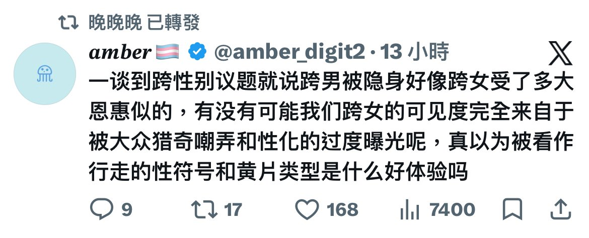

穗_🌾
@Sui_aini
都很惨了，就不要相互比惨了，amber你这个性别研究，真你妈研究到屁眼里去了吧，分裂跨性别对你amber有什么好处，为了能让你更好的去迎合激动女人吗，能让你更好的去和激动女人卖惨收款码?

Alva🏳️🌈🏳️⚧️🏴💛🤍💜🖤8964☮️🪷
@theburningfire4
我至今没有见到过一个像你说的那样说的跨男，反而我认识的人包括我在讨论这个问题的时候都会关注到不同的处境
我平等讨厌所有喜欢说axab跨的人 https://t.co/Qu5sMvtvoo